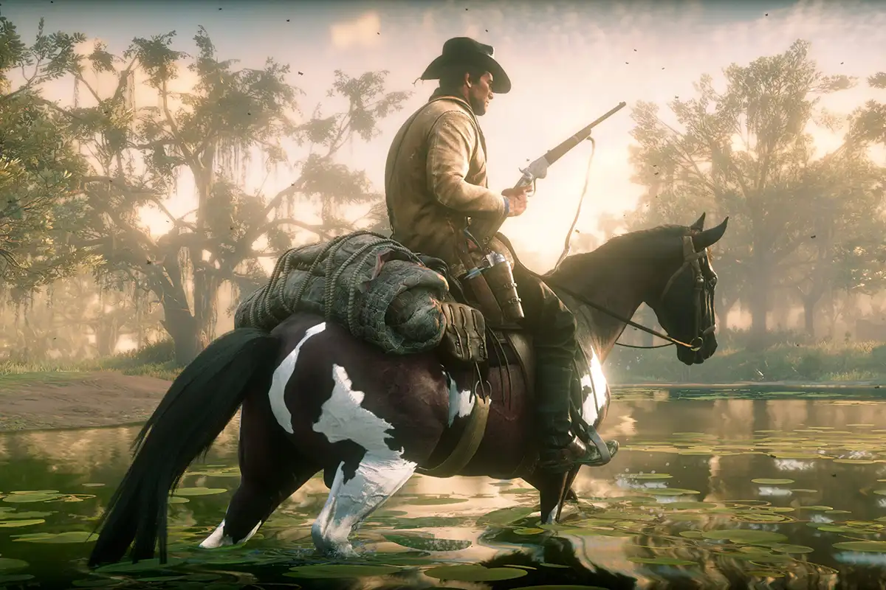
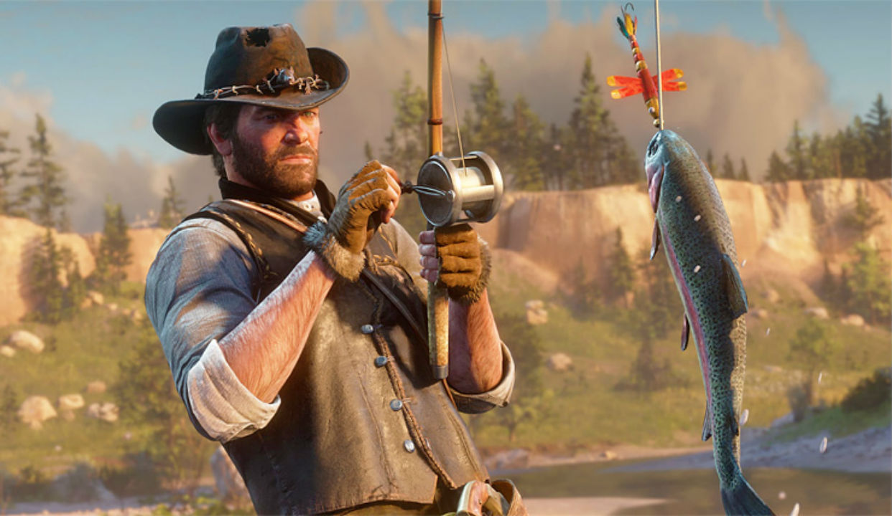
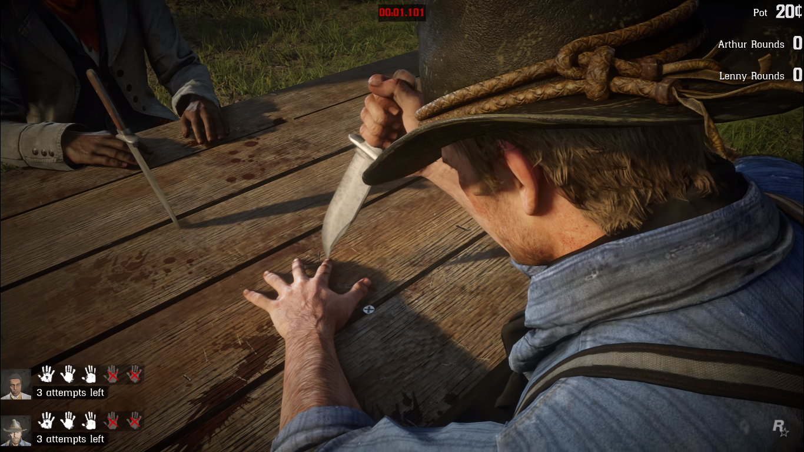
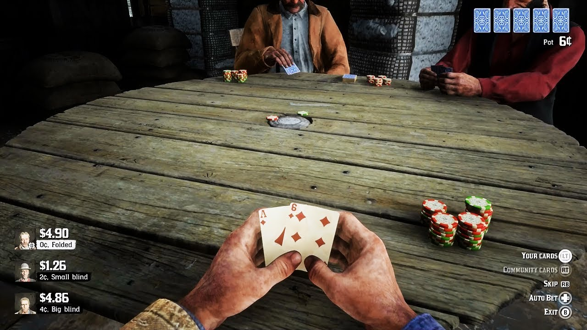

Red Dead Redemption 2
JOGUE RED DEAD REDEMPTION 2
Estados Unidos, 1899. O fim da era do velho oeste se aproxima, e os xerifes caçam as últimas gangues fora da lei. Quem não se rende ou sucumbe, acaba morto. Depois de tudo dar errado em um roubo na cidade de Blackwater, no faroeste, Arthur Morgan e a gangue Van der Linde são obrigados a fugir.

Red Dead Redemption 2 (estilizado Red Dead Redemption II) é um jogo eletrônico de ação-aventura desenvolvido e publicado pela Rockstar Games.

Modos adicionais
Jogue modos como pescaria, dominó, poker, jogo da faca. Você pode ser dono de uma fazenda, cuidar de animais, caçar, calvalgar.

Red Dead Online
Além do modo Hístória tem o Modo Online, você poderá jogar o jogo com seus amigos, Caçar, pescar, etc